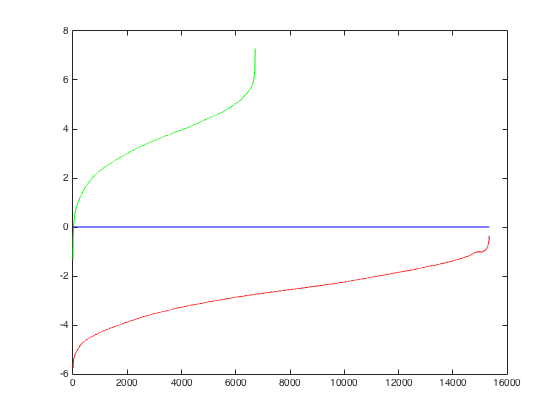
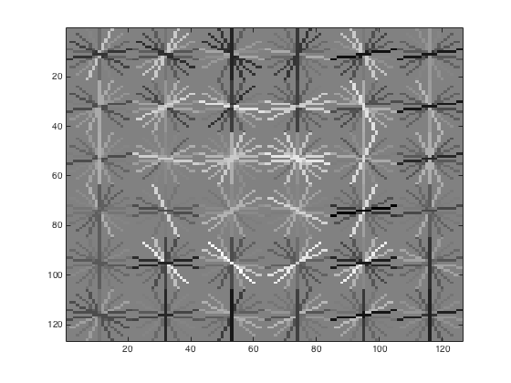
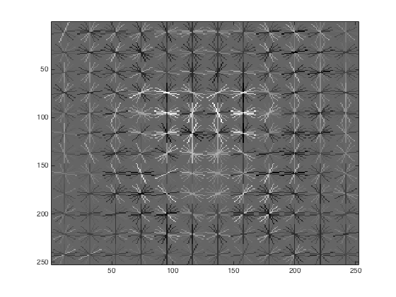
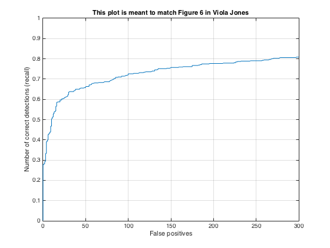
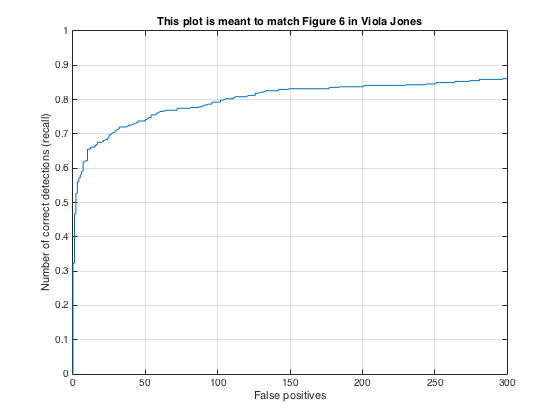
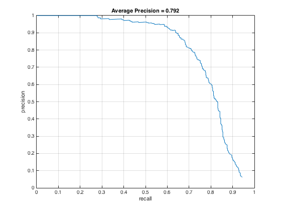
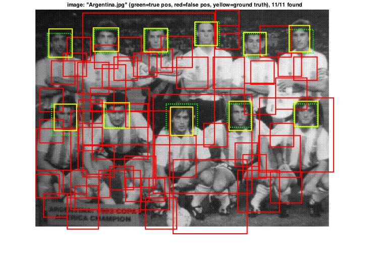
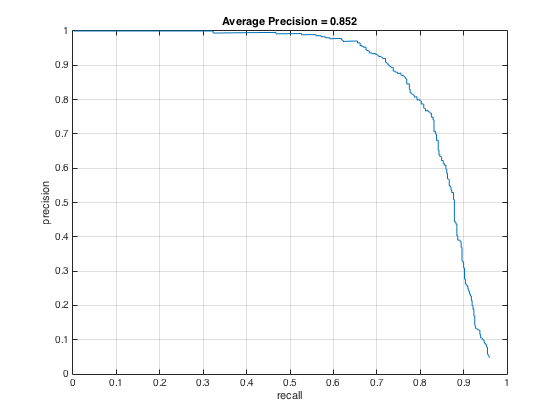
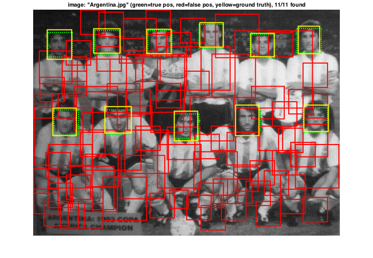

The objective of the Project is to detect faces in images using a sliding window detector. The sliding window model is conceptually simple: independently classify all image patches as being object or non-object. Sliding window classification is the dominant paradigm in object detection and for one object category in particular -- faces -- it is one of the most noticeable successes of computer vision. It has the following steps:
For every 36x36 face we compute its HOG features using the vl_hog function using the HOG cell size 6 & 3. Then we reshape each image and concatenate for every single image. This is our positive data that will extract the faces from the images.
For this step we repeat the above steps but for random scene images. Then we find a random index of the image from which we crop 36x36 image and find its hog features.
After finding positive and negative features we train our data to learn the classification of faces and non-faces. This is done using vl_svmtrain method which take positive and negative features as input.
We convert the test images to hog feature space. Then using a sliding window in hog space we move using a 9x9 window, we multiply each window with new weights and compute the confidence. If confidence is greater than 0.1 its classified as positive match and we find its pixel co-ordinates and create a bounding box around the positive. We then do non-maximal suppression which remove boxes that intersects by more than half. This is done for every image in 10 different scales.
|

The plot of number of positive feaures extracted and negtive features extracted. Green line is the no. of positive features plot and red line is the no. of negative features |
|


Face Template for cell size 6 and 3 respectively. |
|


Recall for cell size 6 and 3 |
|


Accuracy Average precision for multiscale with hard mining and sample image with cell size 6. The average precision is 79.2%. |
|


Accuracy Average precision for multiscale with hard mining and sample image with cell size 3. The average precision is 85.2%. |